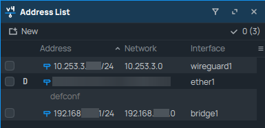
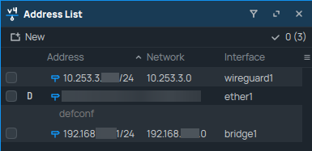

Implementation
In order to be able to have the MQTT data arrive inside the SepsiLab network, multiple settings had to be configured on the routers we have available.
I’ll be going over the following points:
GNS3
See also
For more information about GNS3, check the GNS3 homepage
Before implementing the real world solution, I first tested everything with GNS3. This allowed me to try different configurations in a safe environment. The setup looks as follows:

Because I was unable to replicate an ISP, I substituted it by using a switch. This solution isn’t the exact same as it would be if there was an actual ISP, but it was good enough to simulate the intended solution.
Since the implemented solution is very similar to the simulated one, I won’t go into more depth here.
Note
It’s always a good idea to test your solution in a simulated lab environment first to make sure you don’t break anything!
WireGuard
WireGuard is a general purpose VPN which is meant to be simple, fast and secure. We will be using it to create a secure connection between different networks we might need to access.
See also
For more information on WireGuard and it’s use, visit the WireGuard website
First things first, we have to create the WireGuard interfaces we need on all routers.

The interfaces look similar on all routers, the only difference will be the generated Public and Private Key and the IP address we will assign to it.
The Public and Private key will be used to encrypt and decrypt the data that is going to be travelling over the VPN tunnel.
Warning
Never share your Private key with anyone, as this will compromise your data. The Public key is the only one that will be necessary for configuration on other devices.
SepsiLab:


sagan:
 

Note
We don’t have to configure any static routes, the router learns the correct route dynamically.
After setting up the interface, we need to establish the WireGuard tunnel by setting up the peers. To connect the routers, we only need one public IP address. In our case, router sagan is the publicly reachable device. As such, we can configure the endpoint address for the SepsiLab router to point towards router sagan.
Important
Because we only have one public IP address the only way the WireGuard tunnel can be established, is when router SepsiLab initiates it. Router sagan will not be able to find the SepsiLab router otherwise.

If you look closely, you can see that the allowed addresses are different for both configurations. This is because I want the SepsiLab router to be able to accept all devices on the VPN network.
For router Sagan, the only address that will send data over that specific tunnel, will be the address of the SepsiLab router. This is just a safety precaution, and won’t impact the connectivity in any way.
And with that, we have configured a WireGuard connection between the routers!
A quick ping test will show the following:

Now that we’ve successfully checked if our WireGuard connection works, we can move on to configuring the NAT rules.
Note
In our setup, router Gala was already connected to router Sagan. Later on, we will be connecting to Gala from the SepsiLab too.
NAT
Network Address Translation, or NAT for short, is a way to limit the number of IP addresses private networks need. It does this by translating all local address on a network, like 192.168.0.0/24, to a public address assigned by an ISP.
See also
For more information on NAT and its different implementations, check the Wikipedia page
For our setup, I’ve opted to use the Masquerade functionality of the MikroTik devices. This setting is similar to PAT and will allow us to use devices on our local network to connect over the VPN tunnel as well.
On router sagan, we do not need the Masquerade functionality for the WireGuard interface. This is because the devices on Sagan’s local network do not need to access resources on the VPN network. As such, the only Masquerade we have is to connect to the internet.
SepsiLab:
sagan:
Firewall
See also
For more information about firewall configuration on MikroTik devices, visit MikroTik’s Firewall documentation
To secure the routers from unauthorized access, we have to configure some firewall rules. These are used to filter through traffic coming into the router.
SepsiLab:
Rule 1: FastTrack established and related connections in the forward chain for faster data throughput, the firewall will work with new connections only.
Rule 2: Allow established and related connections in the input chain for traffic targeting the router.
Rule 3: Allow established and related connections in the forward chain for traffic passing through the router.
Rule 4: Allow incoming WireGuard protocol (UDP) traffic on the input chain.
Rule 5: Allow input traffic from the WireGuard subnet (10.253.3.0/24).
Rule 6: Allow input traffic from local interfaces.
Rule 7: Allow forwarded traffic from the WireGuard subnet (10.253.3.0/24).
Rule 8: Allow forwarded traffic from local interfaces.
Rule 9: Drop all other traffic in the forward chain.
Rule 10: Drop all other traffic in the input chain.
sagan:

Rule 1: Allow forwarded traffic from router SepsiLab to router Gala
Rule 2: Allow forwarded traffic from router Gala to router SepsiLab
Test results
And finally with all of this configured, we have connectivity between the routers.
Ping test from local device on SepsiLab network to Sagan:

Traceroute test from local device on SepsiLab network to Sagan:

Ping test from local device on SepsiLab network to Gala:
Traceroute test from local device on SepsiLab network to Gala:

You might have noticed that the Traceroute results only show the routers in the VPN network (namely SepsiLab, Sagan and Gala). This actually means that our VPN tunnel is encrypting the data properly.
If the data wasn’t encrypted, the intermediate hops, like the ISP hops, would be giving us a reply on the ICMP request. In reality, it’s not sending anything back because the hops can’t read the request. With this, we can safely say that our data is securely getting transferred.
With this info, you should now be able to make your own hub-and-spoke network using MikroTik devices.
Thank you for reading, and have a great rest of your day! ☀️